Full-Stack Builder & Systems Teammate
I joined the NASA HUNCH program as a full-stack developer and systems collaborator. My focus was on designing and building the software and hardware components of our Inventory Chain System — a solution built to solve real logistics problems faced by NASA teams.
Inventory Chain System
An end-to-end inventory tracking workflow combining a custom UI, structured data flow, RFID hardware integration, and team collaboration tools. The system was designed to track parts and materials across a workspace with real-time updates and minimal friction.
Houston Finals
Our team advanced to the NASA HUNCH Houston finals, where we presented the Inventory Chain System directly to NASA representatives and engineers. It was a full-circle moment — building something real, then defending it in front of the people who inspired it.
VITALS — Team TETHER
This year I'm back as team lead. Team TETHER is competing in the Software & Technology challenge with VITALS, a medical diagnostic system for crews far from Earth. I build the engine: a local language model that reasons through symptoms, grounded by a medical knowledge base, built to run offline on an NVIDIA Jetson.
Read the case study → Visit the VITALS site →Key Takeaways
NASA HUNCH taught me that engineering is a team sport. I grew as a communicator — learning to translate technical decisions to non-technical stakeholders — and as a developer who writes code that real people depend on. Presenting at the Houston finals showed me I could perform under pressure and defend my design choices with confidence. Most importantly, I learned that shipping something real, even if imperfect, builds more skills than any assignment ever could.
Experience in Photos
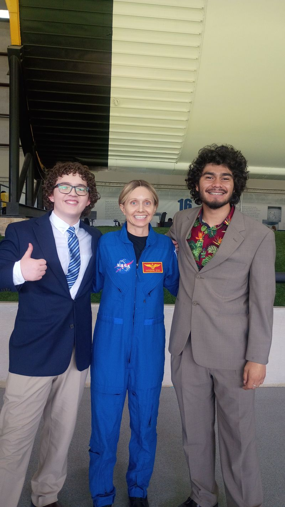
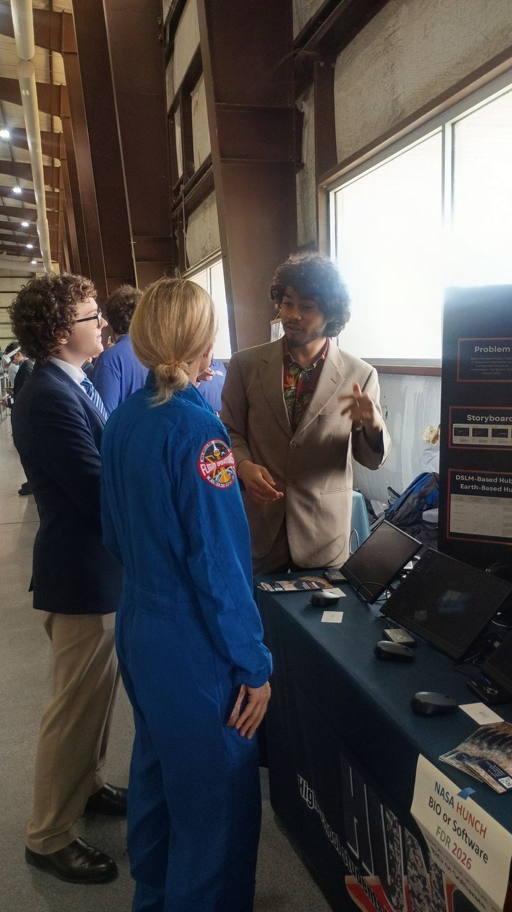
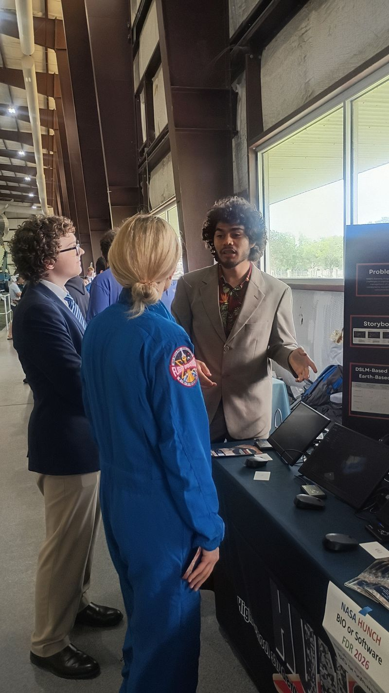
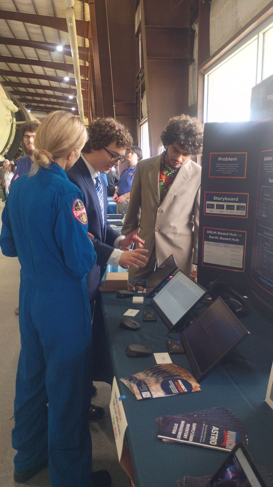
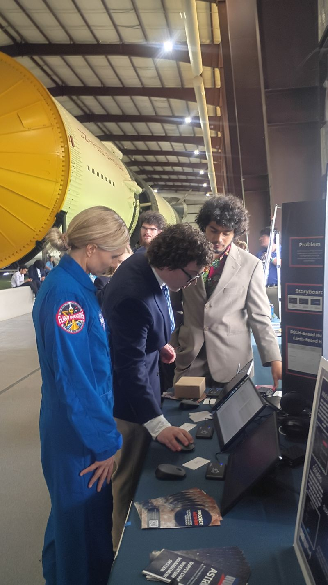
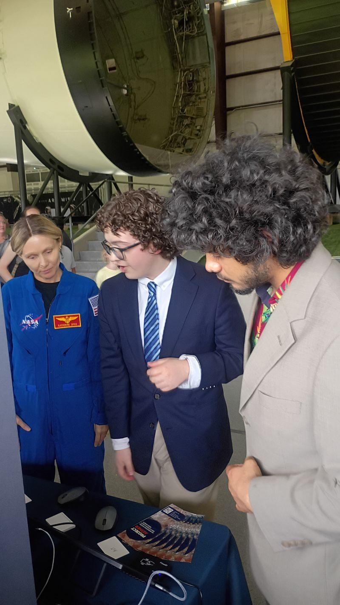
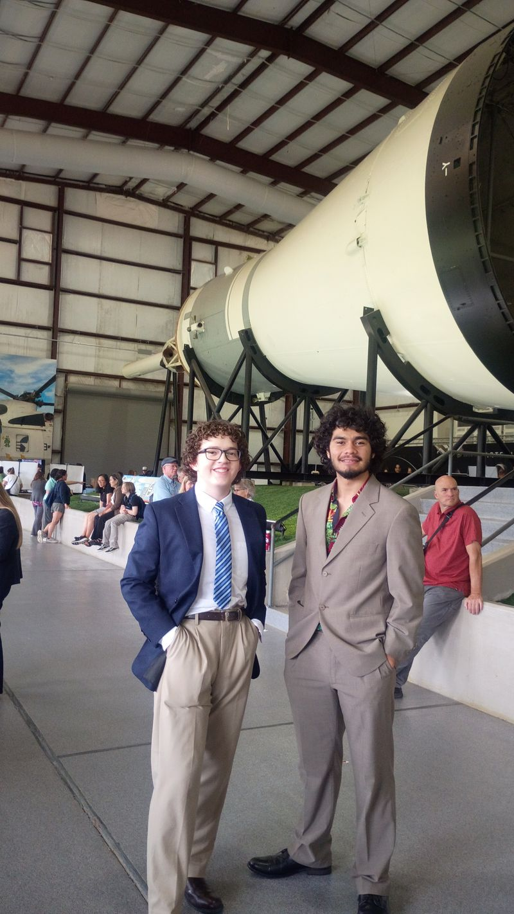
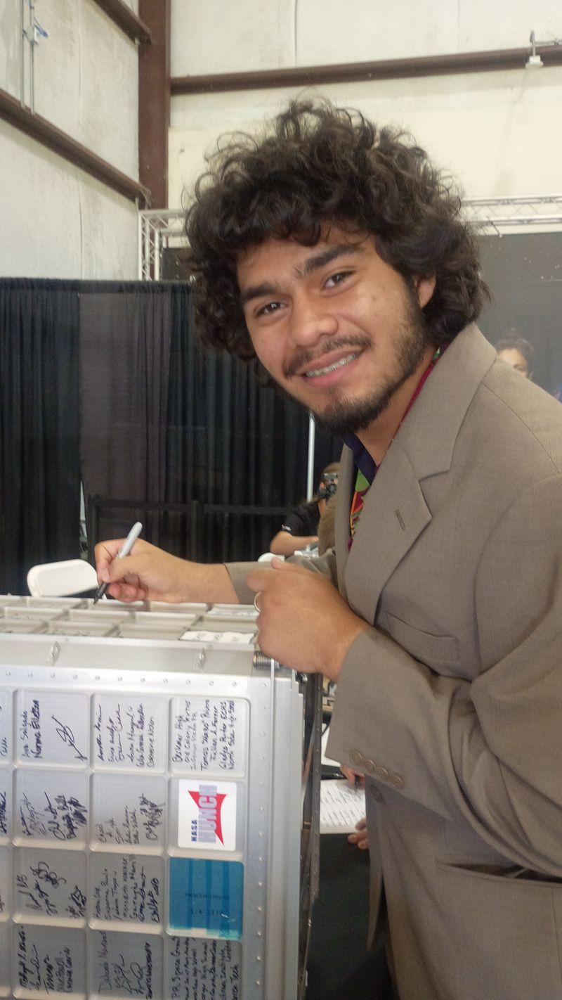
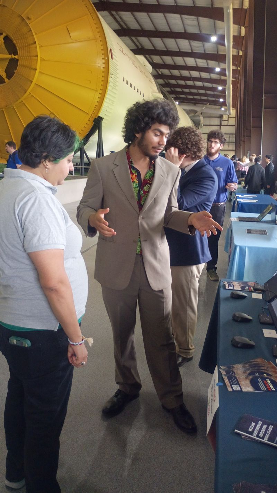
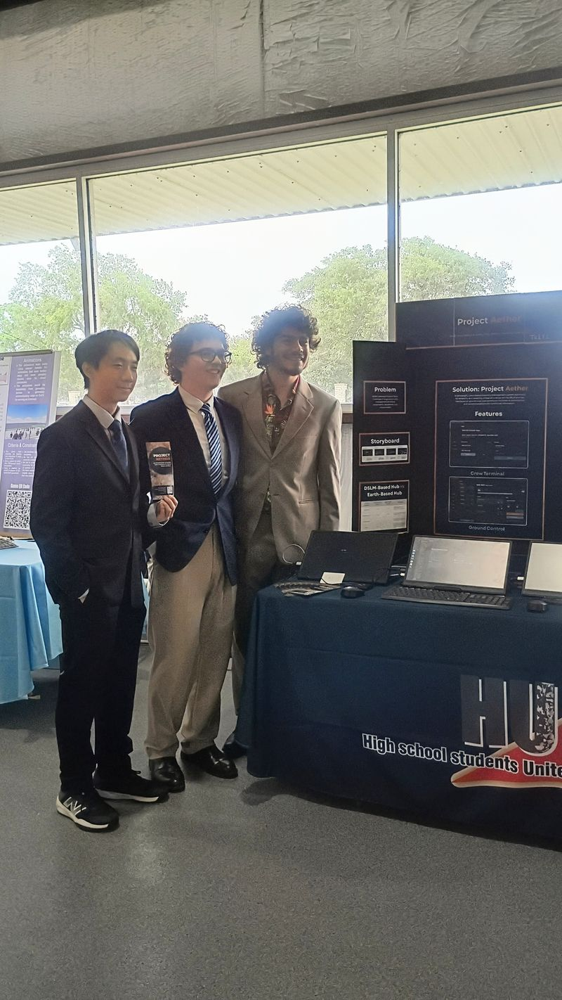
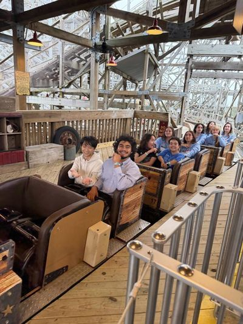
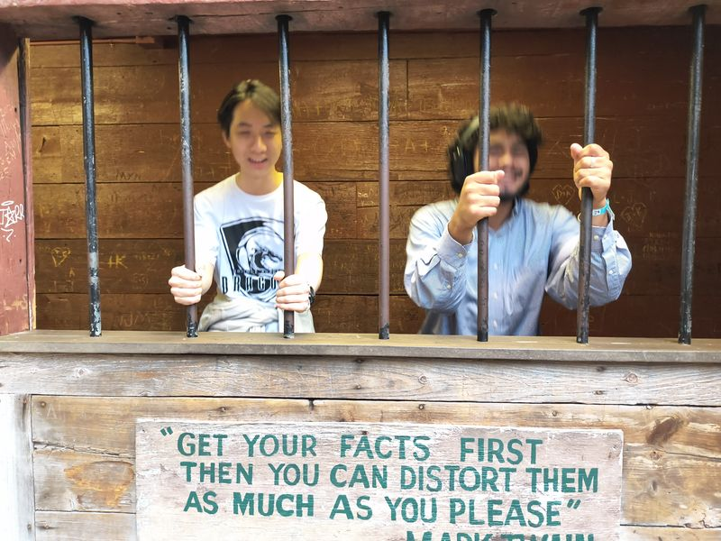
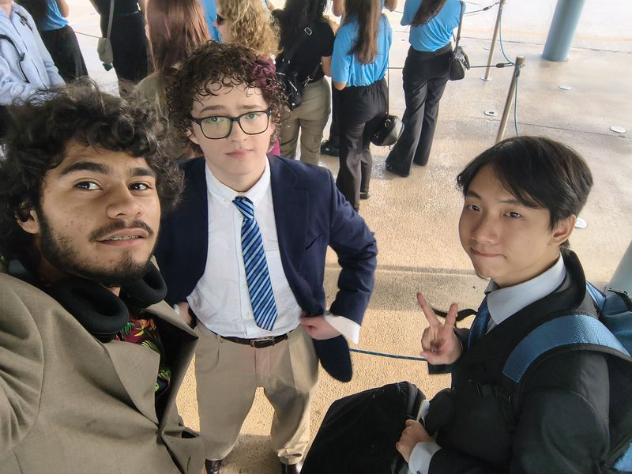
FDR Document
The Final Design Report submitted to NASA for the 2026 HUNCH competition — covering system architecture, hardware integration, software design, and team documentation.
View FDR PDF